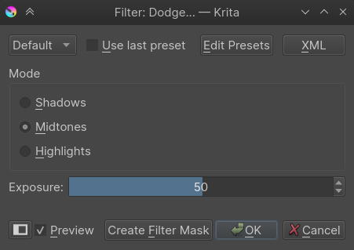
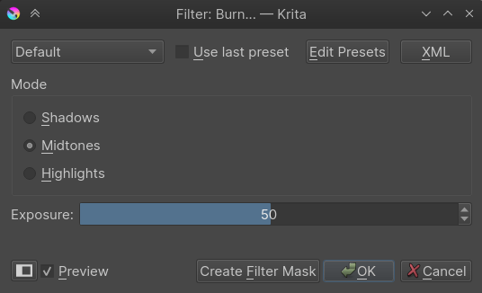
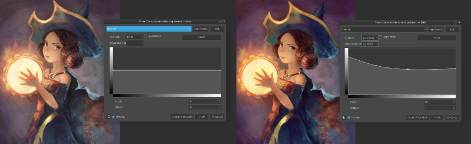
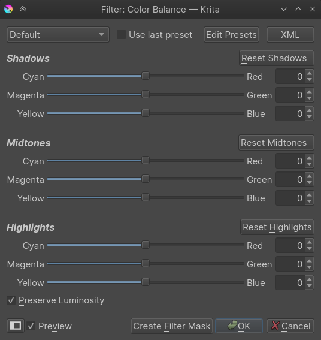
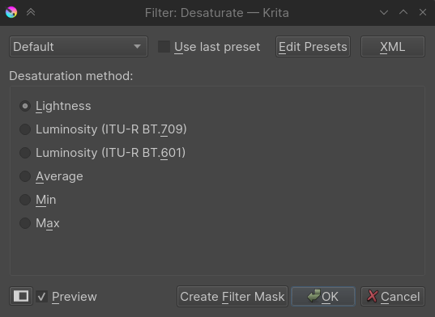
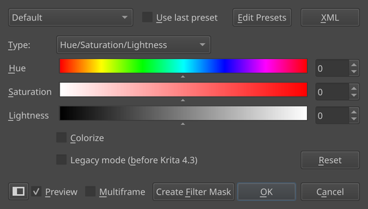
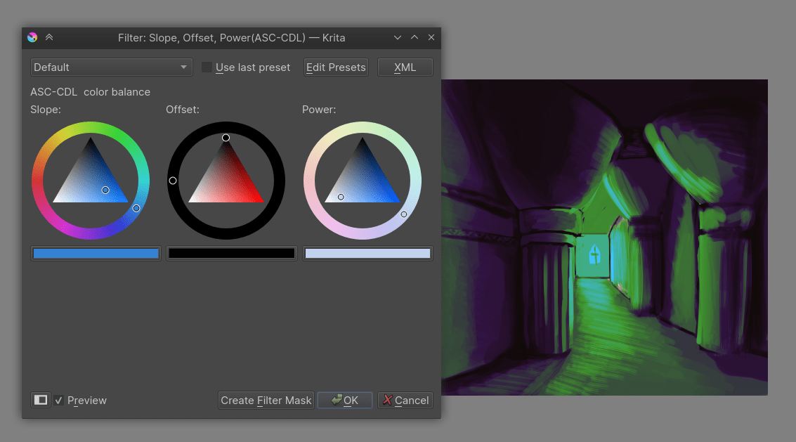

Adjust¶
The Adjustment filters are image-wide and are for manipulating colors and contrast.
Dodge¶
An image-wide dodge-filter. Dodge is named after a trick in traditional dark-room photography that gave the same results.
- Shadows
The effect will mostly apply to dark tones.
- Midtones
The effect will apply to mostly midtones.
- Highlights
This will apply the effect on the highlights only.
- Exposure
The strength at which this filter is applied.
Burn¶
An image-wide burn-filter. Burn is named after a trick in traditional dark-room photography that gave similar results.
- Shadows
The effect will mostly apply to dark tones.
- Midtones
The effect will apply to mostly midtones.
- Highlights
This will apply the effect on the highlights only.
- Exposure
The strength at which this filter is applied.
Levels¶
This filter allows you to directly modify the levels of the tone-values of an image, by manipulating sliders for highlights, midtones and shadows. You can even set an output and input range of tones for the image. A histogram is displayed to show you the tonal distribution. The default shortcut for levels filter is Ctrl + L.

This is very useful to do an initial cleanup of scanned lineart or grayscale images. If the scanned lineart is light you can slide the black triangle to right to make it darker or if you want to remove the gray areas you can slide the white slider to left.
Auto levels is a quick way to adjust tone of an image. If you want to change the settings later you can click on the Create Filter Mask button to add the levels as a filter mask.
Color Adjustment Curves¶
This filter allows you to adjust each channel by manipulating the curves. You can even adjust the alpha channel and the lightness channel through this filter. This is used very often by artists as a post processing filter to slightly heighten the mood of the painting by adjust the overall color. For example a scene with fire breathing dragon may be made more red and yellow by adjusting the curves to give it more warmer look, similarly a snowy mountain scene can be made to look cooler by adjusting the blues and greens. The default shortcut for this filter is Ctrl + M.
4.1 版更變: Since 4.1 this filter can also handle Hue and Saturation curves.
Cross-channel color adjustment¶
4.1 版新加入.
Sometimes, when you are adjusting the colors for an image, you want bright colors to be more saturated, or have a little bit of brightness in the purples.
The Cross-channel color adjustment filter allows you to do this.
At the top, there are two drop-downs. The first one is to choose which Channel you wish to modify. The Driver Channel drop down is what channel you use to control which parts are modified.
The curve, on the horizontal axis, represents the driver channel, while the vertical axis represent the channel you wish to modify.
So if you wish to increase the saturation in the lighter parts, you pick Saturation in the first drop-down, and Lightness as the driver channel. Then, pull up the right end to the top.
If you wish to desaturate everything but the teal/blues, you select Saturation for the channel and Hue for the driver. Then put a dot in the middle and pull down the dots on either sides.
Brightness/Contrast curves¶
This filter allows you to adjust the brightness and contrast of the image by adjusting the curves.
4.0 版後已棄用: These have been removed in Krita 4.0, because the Color Adjustment filter can do the same. Old files with brightness/contrast curves will be loaded as Color Adjustment curves.
Color Balance¶
This filter allows you to control the color balance of the image by adjusting the sliders for Shadows, Midtones and Highlights. The default shortcut for this filter is Ctrl + B.
Desaturate¶
Image-wide desaturation filter. Will make any image Grayscale. Has several choices by which logic the colors are turned to gray. The default shortcut for this filter is Ctrl + Shift + U.
- Lightness
This will turn colors to gray using the HSL model.
- Luminosity (ITU-R BT.709)
Will turn the color to gray by using the appropriate amount of weighting per channel according to ITU-R BT.709.
- Luminosity (ITU-R BT.601)
Will turn the color to gray by using the appropriate amount of weighting per channel according to ITU-R BT.601.
- Average
Will make an average of all channels.
- Min
Subtracts all from one another to find the gray value.
- Max
Adds all channels together to get a gray value.
Invert¶
This filter like the name suggests inverts the color values in the image. So white (1,1,1) becomes black (0,0,0), yellow (1,1,0) becomes blue (0,1,1), etc. The default shortcut for this filter is Ctrl + I.
Auto Contrast¶
Tries to adjust the contrast to universally acceptable levels.
HSV/HSL Adjustment¶
With this filter, you can adjust the Hue, Saturation, Value or Lightness, through sliders. The default shortcut for this filter is Ctrl + U.
- Colorize
This is an option to have all the pixels have the same hue. It uses a HSL formula by default.
- Legacy Mode
In the development of Krita 4.3, the HSV algorithm was adjusted to maintain the variation in brightness better. This is important because brightness contrast is the most important contrast, so you want to avoid losing variation in it. This option toggles the old behaviour for files made in previous versions.
Threshold¶
A simple black and white threshold filter that uses sRGB luminosity. It'll convert any image to a image with only black and white, with the input number indicating the threshold value at which black becomes white.
Slope, Offset, Power¶
A different kind of color balance filter, with three color selectors, which will have the same shape as the one used in settings.
This filter is particular useful because it has been defined by the American Society for Cinema as "ASC_CDL", meaning that it is a standard way of describing a color balance method.
{kind=link}
- Slope
This represents a multiplication and determine the adjustment of the brighter colors in an image.
- Offset
This determines how much the bottom is offset from the top, and so determines the color of the darkest colors.
- Power
This represents a power function, and determines the adjustment of the mid-tone to dark colors of an image.